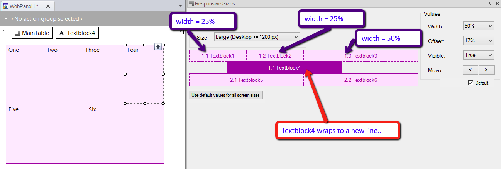

Responsive Table
The control used in GeneXus to design a Responsive Web Application is called Responsive Table, and it is the main control of the Abstract layout. Frameworks like BootStrap provide a container that they call Grid. It is similar to a table, but it adapts to the width of the screen to allow for a RWD. Therefore, this container makes it possible to display the information in a way that is readable to the user regardless of the device or screen size. The GeneXus Responsive Table is generated as a Bootstrap fluid grid. Unlike the traditional Table control, responsive tables allow working with percentage-based designs that guarantee that the elements inside them will always adapt to the device screen. Responsive Table control1. It looks like a table, but the width of the cells is specified using percentages. The percentages are specified for four different screen sizes (according to the width of the screen).
The Responsive Sizes property (X Evolution 3) allows making this configuration for the different screens. 2. The cells cannot be spanned to more than one row - row span is always 1, so this property is not available for the control. 3. For each size (xs, sm, md, lg) a value can be specified for the offset of each column. Besides, the columns can be interchanged depending on the screen size (Move). 4. The aesthetic properties of the controls inside the cells of the Responsive Table have to be managed using Theme Classes. Features of a Responsive Table1. Generated as div elementsIt is generated as div HTML elements, so the columns are not fixed. They may vary according to the screen size, and this can be set using the Responsive Sizes property (X Evolution 3). 2. Differences in behavior between Responsive Table and Table controlThere are differences in the behavior of the responsive table and the Table control. If the width of a cell of a responsive table (which is determined in percentages) is not wide enough to contain the control inside, the information of the control can be overlapped. On the contrary, when the common Table control has no fixed width, it expands to occupy all the necessary horizontal space for its content to be displayed without wrapping or overlapping. This can be achieved by using the Conditional Class Properties for Themes. The form can be arranged in a different way depending on the screen size of the device also. Layout issues of the responsive tableThe cells of a row in the responsive table can be set to any width, regardless that the sum of all the widths is greater than 100%. In such case, the cells remaining - which exceed the width - will wrap to a new line. Example:  Then, the cells of the same row can be interchanged, hidden, or dropped down to another row for any of the screen sizes. Nevertheless, cells that are displayed in a different row, cannot move up to the row which is above of it. For example, if you need to design the following form, where two controls are one beside to the other in the large screen, you need to design the following layout. This, although, in the other screens (extra small, small, medium), the controls are one at the top of the other.
Use default values for all screen sizes buttonThis button allows setting the defaults for all the controls and for all the screen sizes (extra small, small, medium, and large), not only for selected screen size in the "Size" combo box. See Responsive Sizes property to understand the defaults criteria. Default checkboxWhen checked, the selected control is set to its default values. See Responsive Sizes property to understand the defaults criteria. See AlsoArranging the layout in a RWA
|